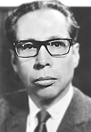

Gustavo Díaz Ordaz Bolaños fue un abogado y político mexicano que se desempeñó como Presidente de México del 1 de diciembre de 1964 al 30 de noviembre de 1970.
Durante el gobierno del presidente Gustavo Díaz Ordaz, es publicado el decreto por el cual se otorga la ciudadanía a los jóvenes mexicanos al cumplir los 18 años. Antes, la ciudadanía se obtenía hasta los 21 años.
El nuevo texto del artículo 34 constitucional señala: “Son ciudadanos de la República los varones y las mujeres que teniendo la calidad de mexicanos reúnan, además, los siguientes requisitos: Haber cumplido 18 años y tener un modo honesto de vivir
El Tratado para la Proscripción de Armas Nucleares en América Latina y el Caribe (más conocido como Tratado de Tlatelolco) es un tratado internacional que establece la desnuclearización del territorio de América Latina y el Caribe de los países signatarios.
El gobierno de Díaz Ordaz fomentó el desarrollo económico de México, siguió el modelo del "desarrollo estabilizador". Manejo de pagos. Evitar el aumento de los precios en los productos básicos, a través del mantenimiento de las tazas de interés en los bancos y el equilibrio del peso con el dólar.
El 26 de julio de 1968 inició a un gran movimiento estudiantil, en las cercanías del edificio de La Ciudadela, entre estudiantes de la Vocacional 5 y 2, del Instituto Politécnico Nacional (IPN), y la Universidad Nacional Autónoma de México (UNAM), participaron profesores, intelectuales, amas de casa, obreros y profesionistas en la Ciudad de México, y que fue reprimido por el gobierno mexicano mediante la matanza de Tlatelolco ocurrida el 2 de octubre de 1968. Inició como una barril de pólvora con los movimientos de los doctores y enfermeras que exigía mejores condiciones laborales para poder realizar sus trabajos con total eficacia pero en lugar de haber sido escuchados y atendidos fueron censurados por parte del gobierno y hasta fueron despedidos por el simple hecho de haber participado en la protesta la cual fue pacífica, y se fueron uniendo profesores, estudiantes etc. El gobierno o más bien el presidente Gustavo Díaz Ordaz intentó detener las protestas que seguían surgiendo implementando la fuerza letal dando origen a la matanza anteriormente mencionada, todo por exigir libertad de todos los presos políticos haciendo una derogación del artículo 145 del Código Penal Federal y el artículo 146 bis del Código Penal que trataba de los delitos de disolución social (protestas), el movimiento termine el 2 de octubre del mismo año con la matanza e aprisionamiento de varios estudiantes pero dejando marcado este suceso para siempre en la historia de México en la ´plaza de las Tres Culturas. Se celebraron las olimpiadas pero se levantó un papalote negro en memoria de los asesinados en el movimiento social.